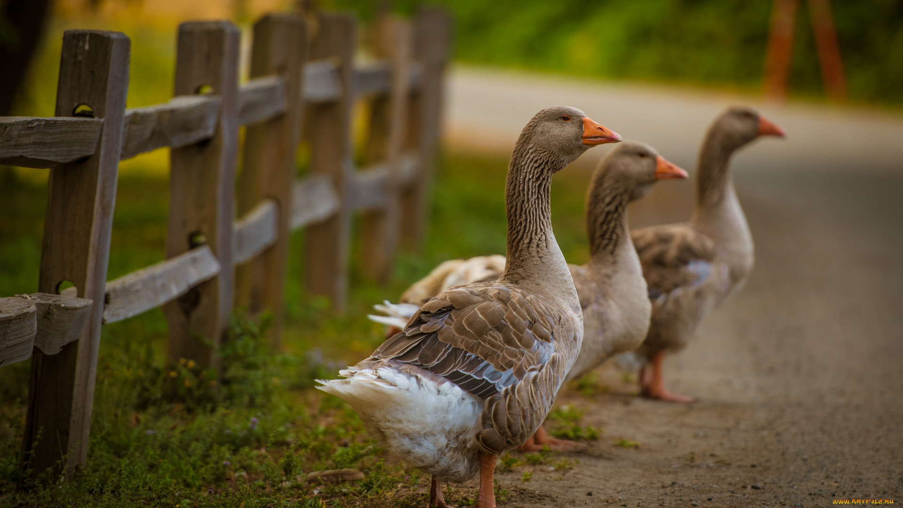

Гуси

Розведення гусей – прибуткова справа для доброго господаря
Гуси завжди були символом добробуту сільського господаря і це не просто так. Адже, гуси – птахи невибагливі, але для успішного розведення вимагають від власника твердих навичок дбайливого господарювання. Розведення гусей на дачі або дрібній присадибній ділянці навряд чи принесе великий дохід, оскільки гуси хоча і вимагають нескладного та необтяжливо, але постійного догляду і добре обладнаного приміщення для утримання поруч з будинком. Якщо ж до гусей лише навідуватися час від часу, помітного доходу не слід чекати. Це, у свою чергу, вимагає деяких початкових вкладень в устаткування гусятника. У цьому матеріалі розглянемо основні нюанси ведення бізнесу з розведення гусей, які перспективи існують в Україні, які вимоги до птахоферми, основи розведення гусей, та рентабельність такої справи.
Що можна отримати від розведення гусей
Питання: «чи вигідно розводити гусей?» взагалі кажучи, риторичне. Розведення гусей безумовно вигідно власнику хоча б невеликого, але рентабельного фермерського господарства у сільській місцевості, щоб, фігурально висловлюючись, «розправити крила».
Гуси – птахи насамперед м’ясні. Несучість гусок невелика, та й гусячі яйця особливим попитом не користуються, тим більше що за смаком вони поступаються курячим та якихось особливих властивостей або якостей за ними не помічено. Але ось м’яса з гектара пасовища гуси приносять в налагодженому господарстві до і більше 2 тон на рік, а перший продукт можна отримати вже через 2 місяці після початку випасання. Потрібно зазначити, що пасовищний сезон гусака триває від першої травички і аж до стійких морозів.
Високим попитом користується делікатесний та цілющий продукт – гусяча печінка. Паштет з гусячої печінки (страсбурзький паштет, фуа гра) – дорогі ласощі. Існують навіть певні породи гусей, які розводяться та вирощуються виключно заради жирної та смачної печінки, дотримуючись певних технологій їх відгодовування. Даний вид птахів має більшу тривалість життя у порівнянні з іншими, і хоч це не актуально в умовах проживання на птахівничому господарстві, цей показник сильно впливає на здатність нести яйця, оскільки гуски, які дожили до віку 2-3 роки, приблизно на двадцять відсотків краще справляються з цим завданням, ніж більш молоді.
Також гуси дають цінний промисловий продукт – гусячий пух, який використовується у промисловості для утеплення одягу. Про можливих покупців пуху слід подумати ще на стадії планування гусячої ферми.
Витрати на зберігання «гусячих» продуктів в цьому бізнесі мінімальні, адже продукція збирається поступово, в міру необхідності. Отже, відпадає потреба в морозильному обладнанні та не відсутні відходи від прострочення термінів зберігання. Собівартість гусятини в дрібно-середньому фермерському господарстві виявляється нижче яловичини (правда, трохи вище свинини), а продажна ціна вище, вище, відповідно, і рентабельність.
З бізнесом на розведенні гусей може впоратися навіть новачок, лише трохи підівчившись, та отримавши мінімальний досвід, оскільки гуси птахи невибагливі, швидко звикають до нового місця, до того ж у них відмінний імунітет, а значить на їх лікування не доведеться витрачати зайві гроші.
Бізнес на гусах можна вести двома шляхами: вирощувати молодняк з метою отримання м’яса або ж займатися їх племінним розведенням. Першим шляхом зазвичай йдуть невеликі фермерські господарства, розраховуючи у майбутньому все ж починати розведення птахів, та й для даного бізнесу не потрібно великих витрат, а рентабельність досить висока. Другий шлях являє собою інкубацію яєць разом з продажем молодих особин. Більшість середніх і великих фермерських господарств намагаються поєднати обидва варіанти.
Що потрібно для розведення гусей
Перше, що потрібно для вирощування гусей – приміщення площею від 150 кв.м. на 1000 голів. Приміщення потрібно капітальне опалювальне, з температурою не нижче 8 градусів в холодну пору року, з утепленою підлогою. Хоча гуси птиці і північні, але спати їм для гарного виходу товарної продукції потрібно у теплі, оскільки їх лапи та дзьоб можуть обморозитися.
Тримати товарних гусей у звичайних сарайчиках не можна і тому, що гуси – крупна домашня птиця, і для регулярного збуту продукції необхіден дозвіл на виробництво сільгосппродукції від санепідстанції, ветеринарної служби та пожежників, і всі вони обов’язково повинні оглянути майбутній гусятник.
У пташнику має бути достатньо сухо та бажана повна відсутність протягів, оскільки гуси не терплять велику вологість. Для дотримання цієї умови при необхідності проведіть невеликий ремонт: полагодьте дах, усуньте щілини у стінах, тощо.
Гусам дуже важлива сухість підлоги, хоч низькі температури для них і не страшні, в зимовий час уважно стежте, щоб у них під лапами завжди була підстилка товщиною від 30-ти сантиметрів. В якості підстилки зазвичай використовують сіно, яке вигідніше заготовлювати власноруч, але необхідно врахувати, що його витрата досить велика. Як вже зазначалось, у гусей два слабких місця – це дзьоб і лапи, і вам обов’язково треба подбати про їх чистоту і сухість. Сіно можна не тільки заготовлювати самим, але й купити готове.
Простий або подвійний суперфосфат відмінно підійде для посипання підстилки з метою підготовки гусячого посліду до подальшого його використання в якості добрива. Щоб послід можна було використовувати як добриво, він не повинен виділяти аміак – саме з цією метою і використовуються суперфосфати. Проводіть регулярне чищення та дезінфекцію пташника, щоб поліпшити якість посліду.
Старі й молоді птахи, особливо ті, що щойно з’явилися на світ і не досягли віку 1,5 тижні, і «забіяки» повинні утримуватися окремо від основного поголів’я, для цього приміщення слід розділити на декілька окремих частин. Спорудіть гнізда для гусок, що будуть висиджувати яйця, причому бажано відгородити їх один від одного таким чином, щоб самки не могли побачити одна одну для уникнення конфліктів. Запасіться дошками (рейками), приблизний розмір яких становить 60×70 сантиметрів, висоту стінок зробіть приблизно рівною 15-20 сантиметрам. Голови гусей не повинні пролазити крізь щілини між дошками, на дні гнізд обов’язково повинна бути пишна підстилка, а зверху – гусячий пух.
Для більшої несучості самкам необхідно забезпечити можливість тривалого перебування на вулиці, і в цьому можуть допомогти спеціально облаштовані вольєри. Маленьким гусятам не потрібно багато місця – досить не менше 1 кв.м., молодняку – не менше 5 кв.м., ну а дорослим птахам – від 15 кв.м.
Основну частину дня гуси проводять поза приміщенням – на повітрі, люблять щипати свіжу траву, причому в день вони можуть вжити її досить багато (до 2-х кілограм). Для гусей необхідна також водойма, від 2-х соток (200 кв. м.) на 1000 голів із зарослими травичкою берегами – гусак птах водоплаваюча. Якщо такого ставка на ділянці немає, його доведеться викопати, наповнити та обсіяти берега газонною травою.
Використовувати для гусячого господарства природні водойми в безпосередній близькості від житла (як і влаштовувати гусячу ферму в населених пунктах) не бажано, оскільки гуска птаха гучна, сильна і досить-таки агресивна. Десяток роздратованих гусей може заклювати на смерть дитину або понівечити дорослого, а ґелґотання гусей створює шум як в ковально-пресовому цеху. Тому гусятник повинен розташовуватися і на достатньому віддаленні від власного житла, інакше по санітарії не пройде.
Найкраще починати гусячий бізнес, викупивши або орендувавши покинутий пташник або корівник у якомусь віддаленому селі. Зробити ремонт і відновити порушені комунікації буде куди дешевше і простіше, ніж будуватися з нуля, та не потрібно буде доводити, що місце підходяще.
Вибір породи гусей
Успіх гусячого бізнесу багато в чому залежить від правильного вибору породи. Порід гусей існує безліч, для різних цілей, кліматичних поясів і специфічних місцевих умов, але, якщо ви вирішили почати новий бізнес – розведення гусей, то вам в першу чергу потрібно буде подбати про регулярні приплоди.
На початку, вибирати вам доведеться між найбільш популярними породами: Кубанською, Емденською, Арзамаською, Італійською білою, Рейнською білою, Тулузькою, Великою сірою і Датським Легартом.
- Кубанська порода гусей володіє високою яйценосністю – кількість яєць може досягати 90 штук. Гусей даної породи можна віднести до легкого типу, адже вага дорослої самки досягає 5 кілограм, а самця – 5, 5-6;
- Емденська порода – це великі і жирні гуси, самки у вазі набирають до 8 кілограм, а самці – до 10;
- Арзамаські гуси стійкі до перепадів температур і до різних захворювань, до того ж вони володіють відмінною якістю м’яса та відносно невеликою масою тіла (близько 7 кілограм);
- Гусям, що належать до Італійської білої породи, властивий швидкий приріст і хороша вага, що досягає 9 кілограм, і дуже висока несучість (до 50 яєць);
- Рейнську білу породу характеризує м’ясо хорошої якості, високий ступінь несучості (45-50 яєць) і середня по вага (до 6,5 кілограм);
- Гуси Тулузької породи, виведені у Франції, відносяться до «печінкових» порід. Висока маса тіла і жирність є їх відмітними особливостями, до того ж вони малорухливі, а холода можуть зіпсувати їх здоров’я. Дорослий гусак у вазі досягає 12 кілограм, а гуска – 10;
- Велика сіра порода гусей славиться міцним складом тіла і хорошою яйценосністю (до 40 яєць в кладці), самець важить близько 10 кілограм, а самка – близько 8;
- Птахи породи Датський Легарт найбільш вигідний в утриманні та розведенні, адже для їх годівлі їжі потрібно приблизно на 20% менше, ніж гусям інших порід. Вони досить добре набирають вагу: двомісячні гусенята додають близько 6 кілограм.
Виходячи із вищесказаного, початківцям можна порекомендувати породу Легарт в якості стартової для бізнесу, в перспективі збільшуючи поголів’я за допомогою таких порід, як Італійська біла і Велика сіра. Для підвищення несучості будь-яку з цих порід можна схрестити з китайським гусаком, тим самим збільшити даний показник майже у два рази для вдалого розвитку бізнесу.
Технології розведення гусей
У першу чергу, успіх бізнесу з вирощування гусей буде залежати від правильно підібраної пари – вкрай небажано змішувати птахів із родинними зв’язками, оскільки це легко може привести до зменшення ваги дорослих особин і порода в кінцевому рахунку буде дрібніти, а її відмінні якості будуть погіршуватися – для дотримання цієї умови придбайте птахів у різних постачальників.
Самець більш важкий, ніж самка, і ще однією відмітною ознакою є «ножиці» на крилах – це 2 маленьких пера. Хороший для розведення гусак повинен бути досить бойовим, адже той, якого здатні забити самки, вважається забракованими і зовсім не годиться для подальшого розведення. Якісні птиці – володарі десятка пір’їн, званих маховими, які повинні бути 1-го і 2-го порядків, на їх хвостах повинна бути присутня рівно така ж кількість як верхніх, так і нижніх рульових пір’їн.
Самець здатний бути корисний для бізнесу з розведення протягом досить тривалого періоду (від 8 до 10 років), і на кожного припадає по три, чотири або навіть п’ять самок. Щороку бажано поповнювати стадо більш молодими особинами, процентна кількість яких зазвичай знаходиться в межах від 20% до 30%.
У період, що триває з кінця лютого і до початку березня, самки починають відкладати яйця. Збирайте їх і розміщуйте в сухому місці, температура в якому знаходиться в межах від 8 до 30 C. Необхідно розташувати їх вертикально, а гострий кінець повинен бути спрямований вниз – в такому положенні вони зберігаються максимум місяць, при цьому яйця щодня слід перевертати.
Буває так, що самка зносить велику кількість яєць, але погано їх висиджує – в такому разі її не обов’язково відбраковувати. Знесені яйця цілком може висидіти й інша самка. Бажано домогтися отримання виводків одного віку. Трапляється, що одна з самок сідає на яйця трохи раніше, ніж інші, в цьому випадку їй підкладають всього лише одне яйце, чекають інших гусок, і його забирають. Вечір – найбільш відповідний час для підкладання яєць у гніздо. По досягненні 10 і 27 днів уважно перегляньте їх на овоскопі та видаліть всі некондиційні яйця. Після 28 днів висиджування збризніть яйця водою, а сам виводок з’явиться на світ на 30-й або 31-й день.
При неможливості проведення природного насиджування яєць, використовують інкубатор, він замість квочки забезпечить яйця необхідним теплом і вологістю повітря.
Годування
Промислове вирощування гусей передбачає певне харчування птахів. Годуєте їх відразу ж після просихання: чим раніше вони поп’ють та наситяться, тим краще це позначиться на їхньому розвитку. Новонароджених гусенят (3-5 днів від народження) годуйте кожні 2 години, а в раціон додавайте кропиву, бобові рослини та злакові трави, конюшину та кульбабу, курячі яйця з додаванням роздробленої пшениці, вівсянки, ячмінної крупи та пшеничних висівок.
Необхідно обов’язково контролювати чистоту їжі та води. Поїлки з водою, щоб уникнути розбризкування, повинні бути встановлені на стелажах, які закриті ґратами з металу або ж дерева. По досягненні пташенятами 10-ти денного віку в поїлку можна додавати слабкий розчин марганцівки. Слідкуйте за тим, щоб вода у птахів була в надлишку, адже вони використовують її не лише для пиття, але й для промивання дзьобів.
Лотки з невисокими бортиками відмінно підійдуть для годування новонароджених гусенят, а ось на третій день життя можна сміливо ставити невеликі коритця з дерева, щоб уникнути затоптування корму. Після того, як малюки подолали місячний рубіж, вони вже здатні харчуватись з «дорослих» годівниць, причому за період, приблизно рівний 2,5 місяцям, на харчування піде досить багато зелені (приблизно 30 кілограм), зерна (близько 12 кілограм) та інших видів кормів (приблизно 3 кілограми).
Влітку дорослі птахи обов’язково повинні бувати на пасовищі, а якщо немає можливості забезпечити їм такі прогулянки, то необхідно давати їм достатню кількість різноманітної зелені, кропиви, бур’янів і лугових трав. Взимку концентрати кормів бажано замінити хоча б на 30% кормами грубого помелу, такими є просіяна лузга, вівсяна полова, сінна мука та коренеплоди. Ячмінь, кукурудза, цукровий буряк, бобові, крейда, різні черепашки, варена картопля і жир повинні бути присутніми в раціоні гусей взимку і восени. Від 50 до 70 грам вітамінів можна додавати в корми кожному птахові, а в період злучки їх харчування має бути рясним і частим – це підвищує їх несучість і позитивно впливає на даний вид бізнесу. Волога мішанка стане відмінним сніданком і обідом, а зернові корми – вечерею у цей період.
Необхідно пам’ятати, що навіть одна хвора гуска може викликати епідемію у всього поголів’я, внаслідок цього бажано убезпечити стадо та свій бізнес від можливих втрат і витратитись на щеплення кожного птаха.